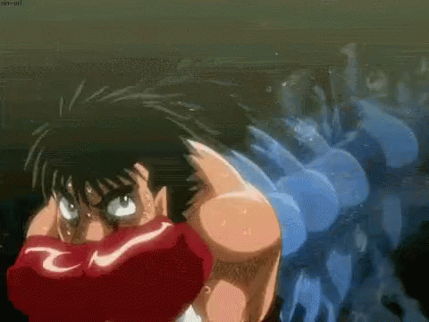
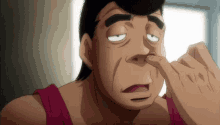
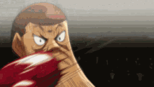

Якось по дорозі додому, він пройшов повз хуліганів,
які почали ображати, а після того і бити Іпо. Від
побиття його рятує Такамура Мамору (який робив свою пробіжку),
молодий боксер, який залякує та проганяє трьох хуліганів.

Такамура Мамору
Боксер середньої ваги із боксерської зали Камогава .
В даний час є чемпіоном у середній вазі за версіями WBC.

Аокі Масару
Є боксером легкої ваги із зали Камогава ,
найкращий друг Кімура Тацуя та один з основних боксерів зали,
а також найсильніший та найкращий персонаж аніме.

Кімура Тацуя
Боксер у другій напівлегкій вазі,
а також разом з Макуноучі Іппо,
Такамура Мамору , Ітагакі Манабу та Аокі Масару є
основним членом боксерського залу Камогава.
Його головні бої відбуваються проти Машиба Рю та Елекі Баттері.